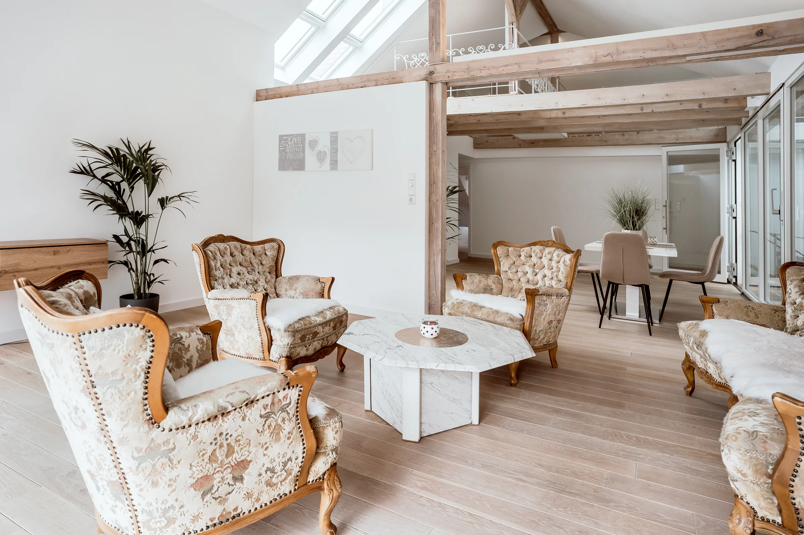

24-Stunden-Pflege Zuhause
Wenn der Pflegebedarf steigt, wächst oft auch die Sorge, ob ein Verbleib im geliebten Zuhause noch möglich ist. Mit einer 24-Stunden-Pflege muss niemand seine vertraute Umgebung verlassen.
Unsere Betreuungskräfte leben mit Ihnen – für echte Nähe und Verlässlichkeit
Die 24-Stunden-Pflege bedeutet: Wir kommen nicht nur zu Besuch – wir bleiben. Für die Dauer der Pflegezeit wohnt eine qualifizierte Betreuungskraft bei Ihnen und begleitet den Alltag aktiv und einfühlsam.
- Unterstützung bei alltäglichen Aktivitäten
- Hauswirtschaftliche Aufgaben wie Kochen, Putzen, Wäsche
- Gesellschaft leisten und einfach da sein
- Ergänzt durch unseren ambulanten Pflegedienst bei medizinischen Maßnahmen

FAQ – Häufige Fragen
Für wen eignet sich die 24h-Betreuung Zuhause?
Für Menschen mit höherem Pflege- und Betreuungsbedarf, die Zuhause bleiben möchten. Wichtig ist ein eigenes Zimmer für die Betreuungskraft.
Was unterscheidet 24h-Betreuung von ambulanter Pflege?
Ambulante Pflege kommt zu festgelegten Zeiten. 24h-Betreuung bedeutet: Die Betreuungskraft lebt im Haushalt und ist dauerhaft präsent.
Was kostet eine 24h-Betreuung?
Die Kosten hängen vom Betreuungsumfang und der Qualifikation ab. Wir beraten transparent und helfen bei Zuschüssen und Anträgen.
Wir beraten Sie gerne
Schreiben Sie uns. Wir hören zu und finden gemeinsam die passende Lösung.
Kontakt